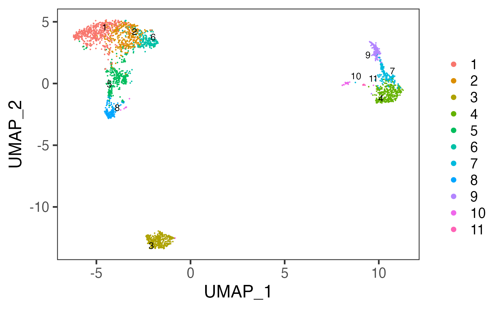
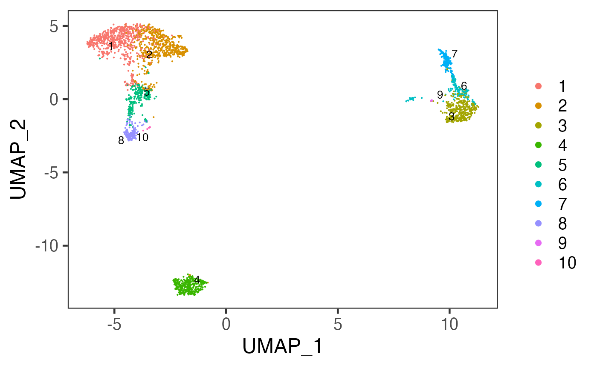

Introduction
SCTK allows users to do clustering on their data with various methods. The clustering methods that SCTK adopts are mainly graph based algorithms, such as Louvain and Leiden, which partitions a Shared Nearest-Neighbor (SNN) graph. The graph can be constructed by Scran [1] or Seurat [2], and the graph clustering is done by igraph or Seurat, respectively. Meanwhile, we also support traditional method such as K-Means [3].
SCTK allows different types data matrix as input. When using Scran’s SNN graph based clustering algorithms, users can specify either an expression matrix or a low-dimension representation as the input, while for Seurat’s methods and K-Means, users can only use the reduced dimensions. For any of the options, we recommend using a low-dimension representation as the input.
To view detailed instructions on how to use these methods, please select ‘Interactive Analysis’ for using clustering methods in Shiny application or ‘Console Analysis’ for using these methods in R console from the tabs below:
Workflow Guide
Entry of The Panel
From anywhere of the UI, the panel for clustering can be accessed from the top navigation panel at the circled tab shown below.

The UI consists of the parameter setting panel on the left and the visualization panel on the right.

Run Clustering

User will choose an algorithm to run the clustering at the very first step. The slide-down option list is constructed in a grouped style. Each group lists all the algorithm that a dependency (shown with grey text) supports. By selecting an algorithm that belongs to different groups, the parameter settings will change.
Method specific parameter settings are shown and explained below:

Scran SNNs
For the choices in the algorithm list, please refer to
cluster_louvain(), cluster_leiden(),
cluster_walktrap(), cluster_infomap(),
cluster_fast_greedy(), cluster_label_prop(),
and cluster_leading_eigen() in the igraph
package documentation.
- Data matrix selection - selection input “Select Input
Matrix”. Scran SNN method allows various types of data
matrices. Either a full-sized or a subsetted expression matrix,
technically called
assayoraltExp, respectively, or a reduced dimension, technicallyreducedDim, is allowed. - Resolution related parameters:
- Numeric input “K value”.
Kis an integer scalar specifying the number of nearest neighbors to consider during graph construction. Considering more neighbors results in larger groups. (See parameterkofscran::buildSNNGraph()) - Numeric input “Resolution”, only seen when choosing
“leiden” algorithm. Higher resolutions lead to more smaller communities,
while lower resolutions lead to fewer larger communities. (See parameter
resolution_parameterofigraph::cluster_leiden()) - Numeric input “Steps”, only seen when choosing
“walktrap” algorithm. The length of the random walks to perform. Less
steps lead to fewer larger communities, and take more time for
computation. (See parameter
stepsofigraph::cluster_walktrap())
- Numeric input “K value”.
- Algorithm detail setting
- selection input “Edge Weight Type”. Users can
specify the type of weighting scheme to use for shared neighbors. (See
parameter
typeofscran::buildSNNGraph()) - Selection input “Objective Function”, only seen when choosing “leiden” algorithm. The objective function, “CPM” [4] or “modularity” [5], evaluates the partitioning of the graph, and the algorithm attempts to maximize the score.
- selection input “Edge Weight Type”. Users can
specify the type of weighting scheme to use for shared neighbors. (See
parameter
- Component number setting - numeric input “Number of
Components”. If users specify a low-dimensional matrix as
input, the method will be applied on the top components. When an
assayoraltExpis chosen, the algorithm will perform a PCA on the matrix and obtain the top PCs for downstream use. This number could be determined with the help of an Elbow plot in the “Dimension Reduction” section. For better visualization, we suggest generating 2D embedding with the same number of components from the selected reduced dimensions.
K-Means
When the selected algorithm belongs to “K-Means” group, the parameter settings will look like the figure above.
- Data matrix selection - selection input “Select a
ReducedDim”. Here the data matrix allowed can only be a reduced
dimension, technically called
reducedDimand should be obtained in advance from Dimensionality Reduction tab. - Cluster number determining - numeric input “Number of Centers (Clusters)”. User will decide the exact number of clusters here. In term of K-means algorithm, the number of cluster centroids.
- Iteration limit setting - numeric input “Max Number of Iterations”. User will here decide the maximum number of iterations to run.
- Algorithm detail setting - numeric input “Number of Random Sets”. Kmeans attempts multiple initial configurations and reports on the best one. Here users will set the number of initial configurations to use.
Seurat
When the selected algorithm belongs to “Seurat” group, the parameter settings will look like the figure above.
- Data matrix selection - selection input “Select a
ReducedDim”. Here the data matrix allowed can only be a reduced
dimension, technically called
reducedDimand should be obtained in advance from “Feature Selection & Dimension Reduction” tab. - Component number setting - numeric input “How Many Dimensions to Use”.
- Algorithm detail setting - checkbox input “Group Singletons”.
- Resolution setting - numeric input “Resolution”.
Visualization

The visualization is implemented with a scatter plot of a chosen low-dimension embedding, colored with a chosen cluster assignment (the newly generated result by default). SCTK by default uses the matrix used for clustering calculation for the visualization. However, usually, users use a PCA for clustering while needing a UMAP/t-SNE embedding for visualization. To change the embedding used, please click on the blue settings (cog) button on the left-top corner.
Settings
- Cluster annotation selection - radio button selection
“Select from Current Results” and “Select from
All Present Annotation”. This selection updates the dropdown
menu with the available annotations. Only a successful run of clustering
in the current SCTK session adds an option for the new result to “Select
from Current Results”, while all the cell annotation stored in
background (i.e.
colData(sce)) are accessible if “Select from All Present Annotation” is chosen. - Dimension Reduction selection - selection input “Use Reduction”. User have to choose a reduction here for plotting. If there is not yet any option, user can obtain one from Dimension Reduction tab.
The clustering methods mentioned in the Introduction can be easily applied to any preprocessed SCE object. Meanwhile, there are other types of clustering methods supported by SCTK, but usually dependent to a curated workflow, such as the Celda Curated Workflow. Here we present the usage of the three functions only.
Basic Parameters
For each of the three functions, the common things are:
- The input SCE object -
inSCE. - The
colDatacolumn name to save the cluster labels -clusterName - The specific algorithm type supported by the dependency -
algorithm
As for another essential parameter, the data matrix used for running the algorithm is a must. Here, users should notice that:
- For
runScranSNN(), either a feature expression matrix or a dimension reduction is acceptable. Users need to use:-
useAssayfor a full-sized expression data (assay) -
useAltExpandaltExpAssayfor a subsetted expression data (altExp) -
useReducedDimfor a dimension reduction. (reducedDim) -
useAltExpandaltExpRedDimfor a reduced dimension stored in thealtExpobject.
-
- For
runKMeans(), only a dimension reduction is acceptable. Users need to useuseReducedDimto pass the argument. - For
runSeuratFindClusters(), it is included within the Seurat Curated Workflow, yet usable as an independent function. However, it will be complicated to use this way. It is recommended to invoke the Seurat clustering functionality in the UI since it is automated there. We will still present the complicated workflow later.
When using useReducedDim as data input, users should be
aware of the number of top components being passed to the underlying
method. This is usually controlled by argument nComp. To
determine this parameter, users can refer to the explanation in Dimensionality Reduction
Documentation. Meanwhile, for better visualization, we also
recommend users to generate 2D Embedding
using the same number of top components from the same dimension
reduction result.
Other parameters are method specific, please refer to the function manual pages for the detail. The typical command call for for each method is shown below:
# Scran method
sce <- runScranSNN(sce, useReducedDim = "PCA", clusterName = "scranSNN")
# K-means method
sce <- runKMeans(sce, nCenters = 9, useReducedDim = "PCA", clusterName = "KMeans")
# Seurat method
sce <- runSeuratFindClusters(sce, useAssay = "seuratScaledData")Example
To demonstrate simple and clear examples, here we use the “PBMC-3k” dataset from “10X” which can be easily imported with SCTK functions. The preprocessing only includes necessary steps before getting cluster labels (i.e. QC and filtering are excluded).
Preprocessing
library(singleCellTK)
sce <- importExampleData("pbmc3k")
sce <- runNormalization(sce, outAssayName = "logcounts", normalizationMethod = "logNormCounts")
# Default HVG method is "vst" from Seurat
sce <- runFeatureSelection(sce, useAssay = "counts")
sce <- setTopHVG(sce, featureSubsetName = "hvf")
sce <- runDimReduce(sce, useAssay = "logcounts", useFeatureSubset = "hvf", scale = TRUE, reducedDimName = "PCA")
# Optional visualization
sce <- runDimReduce(sce, method = "scaterUMAP", useReducedDim = "PCA", reducedDimName = "UMAP", nComponents = 10)
plotDimRed(sce, "UMAP")
Example with Scran SNN
Method specific parameters
-
k, the number of nearest neighbors used to construct the graph. Smaller value indicates higher resolution and larger number of clusters. -
nComp, the number of components to use whenuseAssayoruseAltExpis specified. WON’T work withuseReducedDim. - For
weightTypeandalgorithm, users should choose from a given list of options, which can be found with?runScranSNN. For the introduction of those options, please refer toscran::buildSNNGraph()and igraph. - Different algorithms, supported by igraph, might allows different
parameters, such as
objective_functionandresolution_parameterfor Leiden [6],stepsfor Walktrap [7]. Please also refer to function reference for detail.
# Most of the time, you will want to use a dimensionality reduction for clustering:
sce <- runScranSNN(inSCE = sce, useReducedDim = "PCA", nComp = 10, clusterName = "scranSNN_PCA")
plotSCEDimReduceColData(inSCE = sce, colorBy = "scranSNN_PCA", reducedDimName = "UMAP")
# Alternatively, clustering can be run directly from an assay by setting "useAssay" and "useReducedDim" to 'NULL':
sce <- runScranSNN(sce, useAssay = "logcounts", useReducedDim = NULL, clusterName = "scranSNN_logcounts")
plotSCEDimReduceColData(sce, colorBy = "scranSNN_logcounts", reducedDimName = "UMAP")
Example with K-Means
Method specific parameters
-
nCenters, the number of final clusters. This is required. -
nIter, the maximum number of iterations allowed. -
nStart, the number of random sets to choose. Since K-Means is an algorithm with reasonable randomness, the function allows attempting multiple initial configurations and reports on the best one. -
seed, The seed for the random number generator. - For
algorithm, users should choose from a given list of options, which can be found with?runKMeans. For the introduction of those options, please refer to?stats::kmeans.
sce <- runKMeans(inSCE = sce, useReducedDim = "PCA", nComp = 10, nCenters = 10, clusterName = "kmeans")
plotSCEDimReduceColData(inSCE = sce, colorBy = "kmeans", reducedDimName = "UMAP")
Example with Seurat
Seurat clustering method is recommended to be used in the Seurat Curated Workflow in console analysis. When users preprocessed the dataset with other approaches, the clustering with Seurat function can be complicated, since some sorts of Seurat specific metadata is always needed.
# Prepare what seurat function needs
library(Seurat)
pca <- reducedDim(sce, "PCA")[,1:10]
rownames(pca) <- gsub("_", "-", rownames(pca))
stdev <- as.numeric(attr(pca, "percentVar"))
new_pca <- CreateDimReducObject(embeddings = pca, assay = "RNA", stdev = stdev, key = "PC_")
# Then we can take the Seurat Curated Workflow independent dimension
# reduction as an input.
sce <- runSeuratFindClusters(sce, externalReduction = new_pca)
plotSCEDimReduceColData(inSCE = sce, colorBy = "Seurat_louvain_Resolution0.8", reducedDimName = "UMAP")